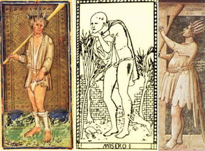

Fool
The Fool before 1788
For the Fool card before Etteilla's introduction of the first explicitly cartomantic deck in 1788, I want to address three issues: (1) the card's role in a trick-taking game; (2) its title; and (3) the images and their symbolism.
In the early years of the tarot, i.e. the 15th century, its main use was to play a trick-taking game, in which players each put in the middle one card, if possible of the same suit as the card led, and the highest card wins. In this situation, the tarot deck has a fifth suit, any of which beats - i.e. triumphs over - any card of the other four, and any card lower than it in this trump suit. (In fact the early name for the tarot was Triumphi (Latin) or Trionfi (Italian), and our term "trump" comes from this use of "triumph".) Given the nature of the game, this permanent trump suit necessarily formed a hierarchy, which in the early years had to be memorized, as neither the number nor the title was on the card itself. Since the Magician is card 1, where does that leave the Fool?
On the other hand, according to the first published rules, in France of 1637, this card was described as having the unique property of being playable at any time, to avoid losing a more valuable card, while being able to take no trick, even against the lowliest cards of the four regular suits. Likewise Court De Gebelin in 1781said, "The Fool takes nothing, nothing takes it" ( He also says, "It is of all suits equally", because it can be played whatever the suit of the card led (Artice 3, section 3, in J. Karlin, Rhapsodies of the Bizarre, p. 36. Yet it remains one of the special cards of the tarot, as opposed to those of the four standard suits, and de Gebelin, like the anonymous 15th century preacher, gives it the number zero. So how old is this "wild card" status?

Starting in the late 15th or early 16th century, printed decks started having Roman numerals on their trump cards. Except for the Sola-Busca, none has a surviving Fool card.. In the 17th century, two complete decks with numbers survive from Paris, one Anonymous and the other by Jean Noblet. In both cases, and in all French decks thereafter, the Fool card is unique in having no number at all. In a game in which the trump cards have Roman numerals, there is no place in the sequence for a card numbered zero, because there is no such Roman numeral. If so, the "wild card" status of the Fool probably existed even in the 15th century. However there might have been games in which it was the lowest trump, given the Sola-Busca's assignment of zero.
The card's title was first Il Matto in Italy, occasionally Il Folle. In France he was Le Mat or Le Fou. Unlike the Italian Matto, the French Mat has no other meaning except "mate" in chess, i.e. the capture of the king, a term that comes from the Persian for "death". Although some have speculated that the Fool likewise is a "death", in being sacrificed to avoid losing a valuable card, there is nothing game-ending about playing the Fool card. Moreover, the term was applied to the card in Italy before it was the parallel term in France, and it has always been a perfectly good Italian word, applied to persons roughly like what is pictured on the card. To understand the title more precisely, we must turn to Italy.
While in modern Italian Matto and Folle are interchangeable, there may have been a distinction earlier, like that to this day between "Madman" and "Fool" in English. In 1821 Abbot Giovanni Romani wrote, in his Dizionario Generale de' Sinonimi Italianince writes of Follia, a dissent to the standard reading of the terms by the Crusca, a society responsible for numerous authoritative Italian dictionaries (I am quoting from Andrea Vitali in his essay "The meaning of the word 'Tarocco'", with my translation in consultation with Vitali, at www.letarot.it/page.aspx?id=470&lng=ENG):
Folle (14), dalla Crusca si fa equivalere a Pazzo, Stolto, Matto, Vano; ma sembra a me che fra questi attributi il più affine a Folle sia quello di Vano. Difatti la Crusca stessa parlando di Folleggiare, derivato da Folle, lo definisce Inconsideratamente operare, ossia Vaneggiare. Tale nozione conformasi alla comune accettazione, giacchè per lo più si qualifica per Folle, Colui che, leggiero d’ingegno, e svanito di giudizio, si perde in vani pensieri, emette ridicoli discorsi, si trattiene in occupazioni inette, e si abbandona a fanciullesche frascherie, per esempio: “In .... vani… . . folleggiamenti spender lo tempo” (Guitt. Lett.). Uno s'era messo a scrivere tutte “le follie e scipidezze che si facessero” (Nov. ant. 74, 1); “Follia non si mescola con sapere” (Dic. div.)Then for Matto he has:
Folle [fool][f. folle / pl.m. - pl.f. folli], (14), for the Crusca, is made equivalent to Pazzo, Stolto, Matto, Vano; it seems to me that the closest among those is Vano. In fact the Crusca itself, talking about Folleggiare [foolishness], derived from Folle, defines it as Operating without consideration, i.e. Vaneggiare [prattling]. That concept conforms to the accepted meaning, as it is mainly described by Folle, one who, of slight talent, and lack of judgment, loses himself in vain thoughts, emits ridiculous speeches, keeps himself in occupations ineptly, and indulges in childish frascherie [foolery], for example: "Spending the time in ... vain .... folleggiamenti [foolishnesses]" (Guitt. Lett.). One was led to write all "the follies and stupidities that are done" (Nov. ant. 74, 1); "Folly does not mix with knowledge" (Dic. div.).
Matto (15), dalla Crusca non definito, nè definibile dagli esempi ch'ella allegò, è dalla medesima equiparato a Pazzo ed a Stolto; ma, stando però alla comune nozione che l'uso concede ad un tal attributo, sembra che sia un misto di pazzia e di follia; giacchè di ordinario si riguardano per Matti Coloro che, per qualche disordine avvenuto nell'organismo del loro cerebro, non più ragionano, nè più operano con quel giudizio e con quel senno di cui sogliono far uso gli uomini sani di mente. La Mattezza pertanto si può riguardare per una Malattia più estesa della pazzia e della follia. È però osservabile che nel comune discorso sovente si adopera la voce Matto colla stessa nozione di Pazzo; ed in questo caso i due vocaboli possono dirsi di egual valore obbiettivo, nè si distinguerebbero tra di loro se non per la circostanza che l'uso assegnò a Pazzo maggiore nobiltà di quella di Matto (16).In other words, folle is more the product of vanity or lack of intelligence than of mental disease, while matto tends toward the latter. Pazzo is a generic term usually translated as "crazy". That folle and matto both were used suggests in practice only a wider range of meaning than either term taken by itself, and similarly inclusive of both "Fool" and "Madman" in English.
(Matto [f. matta / pl.m. matti - pl.f. matte], (15) for the Crusca not defined, nor definable from the examples that it alleged, is equated by them to Pazzo [crazy] and Stolto [dull-witted]; but according to the common notion, however, that the use concedes to such an attribute, it seems to be a mixture of pazzia [craziness] and follia [folly]; since ordinarily Matti are regarded as those who, because of some disorder occurring in the organism of their brain, no longer reason or work any longer with that judgment and wisdom which sane men are wont to use. Mattezza [Madness?] therefore can be related to a more extensive disease of pazzia and follia. However, it is observed that common discourse often adopts the word Matto with the same notion as Pazzo [crazy person]; and in this case the two words can be said to be targeted as of equal value nor will there be a distinction between them if not for the fact that use assigned to Pazzo greater nobility than that of Matto (16). )
Let us turn now to the imagery of the card. In the mid-15th century, whatever the practice later, cards with characters resembling the tarot Fool were not restricted to the tarot. One such deck is the Hofämterspiel, a pack of 48 hand-painted cards in 4 suits, the Fool as number 1, the lowest card of each suit. At left are pictures of the 1 of Bohemia, a male fool, the Narr, and the 1 of France, a female fool, the Narryn. The suits are named after countries and have the appropriate flags. The other countries are Germany and Hungary. The bagpipe played by the 1 of Bohemia, and also by the Sola-Busca Mato, is an instrument traditionally associated with fools, who like the bagpipe was a bag of air signifying nothing. In Latin, moreover, the word folle meant "bellows", "sack", "inflated ball", and the like (https://en.wiktionary.org/wiki/folle#Noun_4). The headpiece is that of the Fool conceived as an entertainer, the court Fool, who of course was anything but, even while acting in a vain or stupid manner for the amusement of the audience
From the same period is the "Liechtenstein'sche" deck, which had five suits (the fifth is Shields). The imagery of the Fool shows up in the court cards, of which there are three per suit: King, Ober, and Unter or Unten. The Unten of Cups is a naked male shown urinating into a cup. The female Fool is the Unten of Polo-Sticks, walking naked with a stick between her legs, as though it were a hobby-horse. The Ober of Polo-sticks carries his stick on his shoulder, with a bag tied around it, similar to the Fools of the Tarot of Marseille tradition.

The stick is another traditional association with the Fool, needed to fend off dogs, predatory animals, and thieves that might attack beggars and the mentally ill, who were often forced to wander the countryside, being driven from place to place with no place to call home. The earliest extant Fool card, that of the Visconti-Sforza deck of the 1450s (near right), has such a stick. This particular stick, a rather formidable club, is similar to that held by Giotto's "Folly" (Stultitia, c. 1305, one of seven vices depicted in the Scrovegni Chapel of Padua (far right).
In the middle above, the Misero card of the so-called "Tarot of Mantegna" (not a tarot, but a set of five groups of cards, each numbered from 1 to 10, on five different themes) correspondingly shows a man in rags leaning on his sick, seemingly oblivious to the dog scratching his leg. Or else he is too melancholy to notice. This is the first of 10 cards of which the next is an artisan at his table, rather like the Magician at his, and the last a Pope. That Sola-Busca Mato (see above,the first image of this post) staring at a crow probably has a similar connotation: black was the color of evil as well as melancholia, and thus crows, from their color, took on the same connotations. Andrea Vitali, in his iconological essay on the Fool, http://www.letarot.it/page.aspx?id=112&lng=ENG, quotes Cesare Ripa in his Iconologia, 1613, pp. 371-372, my translation in consultation with Vitali):
L’infortunio, come si raccoglie d’Aristotele, è un evento contrario al bene, & d’ogni contento: & il Corvo non per esser uccello di male augurio, ma per essere celebrato per tale da' Poeti, ci può servire per segno dell’infortunio: si come spesse volte, un tristo avvenimento è presagio di qualche maggior male soprastante, & si deve credere, che vengano gl'infelici successi, & le ruine per Divina permissione, come gli Auguri antichi credevano, che i loro augurij fussero inditio della volontà di Giove. Quindi siamo ammoniti a rivolgerci dal torto sentiero dell'attioni cattive, al sicuro della virtù, con la quale si placa l'ira di Dio, & cessano gli infortunij”That Giotto put Folly - actually, the Latin equivalent, Stultuum - as one of seven vices rather clearly suggests a moral dimension to the card; so does the beggar of the "Mantegna: image. Folly is the vanity of thinking one knows more or has more power than is justified, of drawing conclusions that are not warranted and acting in grandiose ways. In the Hebrew bible there is a saying (the opening line of Psalm 52, or 53 in Protestant Bibles) translated in the Vulgate as “Dixit insipiens in corde suo: non est deus”, i.e. "The fool [insipiens] says in his heart 'There is no God.'" Presumably the existence of God was thought self-evident, if only from the grandeur of the world around us. But it is not simply an expression of regret that the dull-witted cannot draw the obvious conclusion; there is a moral dimension: it is not simply that he lacks intellectual capacity, he is morally reprehensible for not drawing it. The Cambridge Bible for Schools and Colleges says (https://biblehub.com/commentaries/psalms/53-1.htm):
(Misfortune, as Aristotle writes, is an event contrary to the good and of every contentment. The Crow, not by being a bird of bad omen but by being celebrated as such by the poets, can serve us as a sign of misfortune; if, as oftentimes, a sad event is an omen of greater misfortune to follow, we must believe that following unhappinesses, ruins come by Divine permission, just as the ancient Omens were indications of the will of Jove. Thus we are admonished to turn from the wrong path of evil actions to the security of virtue, with which the anger of God subsides & misfortunes cease.)
The word nâbâl here used for fool denotes moral perversity, not mere ignorance or weakness of reason. ‘Folly’ is the opposite of ‘wisdom’ in its highest sense. It may be predicated of forgetfulness of God or impious opposition to His will (Deuteronomy 32:6; Deuteronomy 32:21; Job 2:10; Job 42:8; Psalm 74:18; Psalm 74:22): of gross offences against morality (2 Samuel 13:12-13): of sacrilege (Joshua 7:15): of ungenerous churlishness (1 Samuel 25:25). For a description of the ‘fool’ in his ‘folly’ see Isaiah 32:5-6 (A.V. vile person, villany).It is also not a question of intellectually denying the existence of God. There is nothing corresponding in the Hebrew to the English "there is", implying existence as such. The same commentary says of the English "There is no God":
This is not to be understood of a speculative denial of the existence of God; but of a practical denial of His moral government. It is rightly paraphrased by the Targum on Psalm 14:1, ‘There is no government of God in the earth.’ Cp. Psalm 73:11; Jeremiah 5:12; Zephaniah 1:12; Romans 1:28 ff.The fool looks around him and sees no God, i.e. the absence of God in the world, whether or not such a being may exist..
A similar point has been made by the Jewish scholar Ahuva Belkin ("Suicide scenes in Latin psalters of the thirteenth century as reflection of Jewish midrashic exposition“ in Manuscripta, XXXII, no. 2, July 1988, pp. 75-92, p. 75, quoted by Vitali in his essay on the Fool already citedl:
The Latin “insipiens” - a translation of the Hebrew “naval” - lacks the wide negative connotation which, in the original Hebrew text, removes the “naval” of the Psalm from the sphere of folly as a mental weakness and places him within a certain category of heresy. The biblical “naval” is not confronted - like folly - with wisdom as an intellectual faculty but rather with wisdom to do the right thing, in an order that harmoniously ties the individual’s life and social behavior with the principle of divine rule.In the Renaissance,the same disapprobation applies to the beggar: if someone is reduced to begging, unless he is doing so as a member of a mendicant monastic order, it is probably because he acted unwisely in some blameworthy way, perhaps unlawfully, perhaps in not taking the trouble to master a useful trade, or perhaps by wasting one's money in drink or gambling instead of saving for a rainy day. In 17th century Sicily the title of the card is Il Fugitivo, which of course makes the personage morally culpable in itself: he is a fugitive from the law..
Gertrude Moakley observed that the Visconti-Sforza Fool had exactly seen feathers in his hair. That makes him, and Giotto's figure as well, the personification of Lent (The tarot cards painted by Bonifacio Bembo for the Visconti-Sforza family, 1966, p. 114) :
The seven feathers in his hair, and the ragged penitential garments which he wears, show that he is the personification of Lent, which puts an end to the Carnival season. According to custom, one of his feathers will be pulled out at the end of each week in Lent. The figure of Lent himself will be destroyed in effigy on Holy Saturday, when the fast ends.
Heironymus Bosch did two paintings of such penitent fools, each in ragged clothes and carrying a club similar to that in the Sforza card and Giotto fresco. In one (at left below) he has just left a house of riotous living, of drink and prostitutes, and he faces a closed gate, probably signifying that heaven is barred to him (Lorinda . In the other, he merely wends his way through a world of both joys and sorrows, as well as omnipresent death (the raven, the bones) grimly; here a stream marks the passage from this world to the next, for which there is at least a bridge, however uncertain it is whether it will bear his weight .

In this same vein the court fool would speak in riddles; what appeared as nonsense or foolishness would then be revealed as wisdom. Some of the parables of Jesus are of that sort, as well as numerous legends and folk tales. Shakespeare would turn one of them into his immortal Hamlet. On the other hand, some obscure sayings, if taken in the wrong way, could lead one to disaster, as with those told to Macbeth by the "weird sisters" of Shakespeare's play.

Directly opposite to the meaning of the card as moral defect, there is a certain affinity between the face of the Visconti-Sforza Matto and those of saints painted by the same workshop as the card, that of Bonifacio Bembo around the same time. Compare the Matto's face and two "Martyr Saints" attributed to Bonifacio or Ambrogio Bembo, c. 1450 (from Bandera and Tanzi, Brera Gallery exhibition catalog, 2013, p. 81). These gaunt faces of unfathomable inwardness are not the way saints were normally portrayed. It is reminiscent of pseudo-Dionysus's account of Moses' ascent on Mount Sinai at the end of his Mystical Theology (newly translated in 1436 Florence). He interprets Moses's climb as that of "walking the heights of those holy places to which the mind at last can rise" (1001A). But then:
...he breaks free of them, away from what sees and is seen, and he plunges into the truly mysterious darkness of unknowing. Here, renouncing all that the mind may conceive, wrapped entirely in the intangible and the invisible, he belongs completely to him who is beyond everything. Here, being neither oneself nor someone else, one is supremely united to the completely unknown by an inactivity of all knowledge, and knows beyond the mind by knowing nothing.Ps.-Dionysius makes this point in another way in a passage in Divine Names. Citing St. Paul in I Cor. 1:25: “The foolishness of God is wiser than men” (865B), he explains (865C):
And here the divine apostle is said to be praising God for his “foolishness,” which in itself seems absurd and strange, but uplifts [us] to the ineffable truth which is there before all reasoning.That the Fool card is without number seems to indicate its lack of confinement or limitation in human concepts. This same idea runs through the later Platonists of antiquity: above the Platonic Demiurge, creator of the univrse, is the Divine Mind, above that the One, and beyond that something else, which cannot be described in words at all. In this context, the feathers on the Visconti-Sforza Fool's head suggest the wings of a bird or angel, flying close to heaven.
The association to the divine may be why, in one of the many "tarocchi appropriati" - i.e. the tarot appropriated for other use, in this case a sonnet - the poem ends:
Per poter dire i buon tarocchi mejFor the whole sonnet, see Andrea Vitali's "Tarot in Literature I" at http://www.letarot.it/page.aspx?id=199&lng=eng.
Saran, s’avien ch’io giuochi, et questi uno
Vo trarre il Matto che ‘è cervel divino.
(So that to be able to say the good tarots will be
Mine, I have to play, and this one card
I draw will be the Fool, which is the divine brain.)
It was thought at this time, in the philosophy of Neoplatonism, that God did not need the differentiated understanding of linguistic thought, that for Him all was intuitive understanding of the whole. It was in such a state that the prophets existed in when they could see the future, of which words were a mere approximation. Such was the folly or madness of God-possessed men and women, for example St. Francis, who was called the "Holy Fool", or the "Fool of God".
Such madness was that to which certain poets also referred, for example Leonardo Bruni, who also was chancellor of Florence in the period just before our first surviving record of the tarot there. He wrote, in a 1429 letter that had "already circulated widely even before Bruni published the first version of his collected letters around 1440" (Hankins, Humanism and Platonism in the Italian Renaissance vol. 1 p. 149 n. 21):
For, as we know from Plato, there are two species of madness, one flowing from human diseases--an evil and detestable thing of course--; the other from a divine alienation of the mind.And also:
This violent seizing and capture of the mind is called Love, a kind of divine alienation [alienato] and forgetfulness [oblivio] of self [in id], a transferal into that whose beauty we admire. If you call this madness [furorem] and insanity [vesaniam], I would wholly agree, so long as you understand that no poet can be any good who is not seized by a "madness" of this sort [huiuscemodi furore correptum], nor can God be well and perfectly worshiped, except through this kind of mental alienation.This higher madness, paradoxically, looks much like the lower and thus is suitably represented in the obliviousness of the tarot Fool.
In Ferrara, for the d'Este ruling family, probably for the wedding of Ercole d'Este with Eleanor of Aragon in 1486, he was portrayed as an object of interest for young boys, as his penis is exposed and he doesn’t mind if they touch it, or at least pull down his underwear. The preachers must have castigated this image; we see his private parts covered in the otherwise similar so-called "Charles VI" image, from Florence of around the same time or a little earlier . Of these two, the d'Este image is certainly the more daring. The boys in that card are fascinated by the mature penis, while in the other they are engaged in the more socially acceptable activity of throwing stones. (7)
Such unembarrassed nakedness puts the Fool in the same class as Adam and Eve in a state of innocence, before they knew they were naked, and also of very young children, who run around without being embarrassed, and of animals. Likewise those of seriously diminished mental capacity were thought to lack the capacity to distinguish good from evil. The fool's cap, suggestive of horns, become donkey ears in the "Charles VI", help to suggest the Fool's mental affinity to animals; the donkey in particular had a shamefully large genital member.
The Fool's nudity was given an allegorical meaning by Cesare Ripa, in a passage of his Iconologia (1603 ed., p. 478) to which Vitali has called attention in his essay on the Fool, already cited::
Stoltitia: il Pazzo palesa i suoi difetti ad ogn’uono, & il savio li cela, & perciò si dipinge ignuda, & senza vergogna.
(Stupidity: the Madman [Pazzo] reveals his defects to everyone, & the wise conceals them, & that is why he is depicted naked, & without shame.)
For all children are dwarfs in shape, but cease to be so as they become men, from the growth of their lower part. ... For even among men themselves if we compare children with adults, or such adults as are of dwarf-like shape with such as are not, we find that, whatever other superiority the former may possess, they are at any rate deficient as compared with the latter in intelligence.
Children's "deficiency in intelligence" is for Aristotle a matter of their immature brains, and there were also adults who kept this immature development all their lives. In a simlar vein is the Mitelli Fool of 18th century Bologna, which shows him with a kind of pinwheel that turns in the wind, including the wind generated by running with it. This toy was a popular amusement of children, as shown in a well-known painting by Hieronymus Bosch (near right above, left wing of the "Christ Carrying the Cross" triptych, c. 1500). Children also, like Mitelli's Matto, liked to run with balloons; in the Fool's case, they also serve to illustrate the state of his brain.
Finally, the word "folle" derives from the Latin follis, meaning "bellows, leather bag", probably related to an earlier use for "windbag, empty-headed person". There was also "folles", meaning "puffed cheecks" (see https://www.etymonline.com/word/fool). As such the Sola-Busca Fool, shown earlier, plays a bagpipe, which used a bag full of air.
Finally, we must observe that the meaning of the word "tarocco" itself, i.e. the game and deck known as tarocchi or tarot, in its first known appearances strongly corresponds to the meanings of the words "Matto" and "Folle". In Piedmont of the later years of the 15th century there was a style of verse known as Maccheronea which mixed up Italian and Latin, perhaps inventing new words in the process. In a book of such verse, dedicated to Gaspar Visconti in 1499, there appears these lines, given to the poet Bassano Montovano (with Ross Caldwell's translation):
Here "idiot" is the morally pejorative term, not implying deficient mental capacity but rather the same attitude of vain privilege that applies to the word "Folle".Erat mecum mea socrus unde putana
Quod foret una sibi pensebat ille tarochus
Et cito ni solvam mihi menazare comenzat.(My mother-in-law was with me, and this idiot thought he could get some money out of her, so he started threatening me).
From around the same time and place there is another use of the term, in a section of Giovan Giorgio Alione's Frotula de le dòne (Frottola of women), found by Vitali and cited in his essay already cited, http://www.letarot.it/page.aspx?id=470#:
Marì ne san dè au recioch
Secundum el Melchisedech
Lour fan hic. Preve hic et hec
Ma i frà, hic et hec et hoc
Ancôr gli è – d'i taroch
Chi dan zù da Ferragù
The esotericists Etteilla, Levi, Christian, Papus, Waite, Case, and Wirth
Etteilla had fun with the ambiguity in the card's position in the hierarchy. In the 3rd Cahier, published 1785, he gave it the number 0, but put it between cards 1 to 21, which correspond to the trumps, and those of the suits, of which the King of Batons was number 22. All 22, including the Fool, he groups together as the "Hieroglyphs majeurs", major Hieroglyphs; the suits are then the "Hieroglyphs mineurs" (http://tarotforum.net/showpost.php?s=cef8bd64143b941f9aaae76a09d0dee1&p=3229955&postcount=1). He says of the card: (ibid)
Nº. 0. Le Fol, ou la Folie; cette Carte est la seule qui n’eut effectivement jamais de numéro; ce qui revient assez bien à ce qu’il n’est guères possible d’assigner un nombre à nos chères folies (*13); signifie folie.The standard translation of Follie on Etteilla decks with English keywords is "Madness".
(No. 0. The Fool [or Madman], or Folly [Madness]; this Card is the only one that in fact never had a number; which returns well enough to the fact that it is hardly possible to assign a number to our dear madnesses [or follies] (13); it means folly [madness].)
Altough the card has the same keyword upright and reversed, when the card - or any of the majors - is reversed "alors le pronostic était moindre" (then the forecast was less). There are also the word lists constructed by Etteilla's immediate followers. The one published in 1838 says (p. 188):
Démence. Extravagance. Déraison. Egarement. Ivresse. Délire. Fièvre chaude. Frénésie. Rage. Fureur. Transport. Enthousiasme. Aveuglement. Ignorance. Fol. Insensé. Déraisonable. Innocent. Niais.After Etteilla and his followers came Eliphas Lévi, starting in 1856. He says (Dogme et Rituel de la Haute Magie, Parte 2, 1861 edition, p. 354; Greer and Mikituk translation, p. 400, with my comments in brackets):
Renversé: Imbécilité, Ineptie, Insouciance. Bêtise. Imprudence. Négligence. Absence. Distraction. Apathie. Nullité. Vain.
(Dementia. Extravagance. Lunacy. Bewilderment. Drunkenness. Delerium. Hot fever. Frenzy. Rage. Furor. Transport. Blindness [blinkered state]. Ignorance. Fool or Madman. Absurd. Irrational. Innocent. Simpleton.
Reversed: Imbecility, Ineptitude, Carefree. Stupidity. Imprudence. Negligence. Absence. Distraction. Apathy. Nullity. Vain.)
שׁLe sensitif, la chair, la vie éternelle.Hiéroglyphe, le fou : un homme habillé en fou, marchant au hasard, chargé d'une besace qu'il porte derrière lui, et qui est sans doute pleine de ses ridicules et de ses vices ; ses vêtements en désordre laissent à découvert ce qu'il devrait cacher, et un tigre qui le suit le mord sans qu'il songe à l'éviter ou à s'en défendre.
(שׁ The vegetative [more accurately, "sensate"], the flesh, eternal life.Hieroglyph, the Fool [or Madman]: a man dressed as a jester, walking haphazardly, loaded with a wallet which he carries behind him, and which is no doubt full of his absurdities and his vices; his disorderly clothes display openly what should be hidden, and a tiger who is following him bites him, without his thinking of avoiding it or defending himself.)
Given the letter Shin, the 21st letter of the 22 letter Hebrew alphabet, the card is in a new place in the order, between Judgment and World, where indeed it appears in his exposition. He does not say why he puts it there. One possibility is that after the Judgment there are two places one can go, to hell with the fools and heaven with the wise. The card after this one, as Levi describes it (Ibid), is much like the Marseille World card. Featuring a crown, the four evangelists, and the figure of Truth, it would seem to indicate the way to heaven. From this perspective, that the Fool card fits the letter Shin is appropriate for two reasons. First, the "sh" sound resembles that of a serpent, the animal of Satan; second, in the Sefer Yetzirah, about which he writes in his next book, that letter is associated with fire, which of course is the predominant element in hell.
The identification of the animal as a tiger biting the man's leg comes from Etteilla's card. But Etteilla does not have the figure dressed as a jester, nor do his clothes reveal what should be hidden. Levi has combined Etteilla's with the ordinary Tarot of Marseille image. The point about revealing what should be hidden is the allegory, already cited in relation to the d'Este card, given by Ripa.
Levi's follower Paul Christian, writing a few years later (L'Homme Rouge des Tuilleries, 1863, and L'Histoire de la Magie, 1870), was concerned to "restore" the tarot to its supposed Egyptian origin, which he recognized that Etteilla's card did not reflect, given the influx of Egyptian artificats into Paris by his time. So his animal is a crocodile, and the associated Egyptian letter is his supposed "Sichen", the 21st letter of the 22 letter Egyptian alphabet, obviously the precursor of the Hebrew. Christian writes (p. 110 of original, p. 110 of English translation)
ARCANE 0. LETTRE Sichen (S). NOMBRE 300.The introduction of the crocodile was undoubtedly suggested by the animal in the Judgment Hall scene shown in various Egyptian artificats, in which the heart of the deceased is weighed against the feather of Ma'at. He describes this scene later in History of Magic (p. 144 of original, pp. 123-224 of translation):
S = 300 figure le châtiment qui suit toute faute. Tu vois ici un aveugle chargé d'une besace pleine, et qui va se heurter contre un obélisque brisé, sur lequel se pose en arrêt un crocodile à gueule béante. Cet aveugle est le symbole de l'homme qui s'est fait l'esclave de la Matière. Sa besace est remplie de ses erreurs et de ses fautes. L'obélisque brisé figure la ruine de ses œuvres; le crocodil est l'emblème d'une implacable fatalité, et de l'inévitable Expiation.
(ARCANUM 0. LETTER Sichen (S). NUMBER 300.
S-300 represents the punishment following every error. You can see here a blind man carrying a full beggar's wallet about to collide with a broken obelisk, on which a crocodile is waiting with open jaws. This blind man is the symbol of he who makes himself the slave of material things. His wallet is packed with his errors and his faults. The broken obelisk represents the ruin of his works; the crocodile is the emblem of fate and the inevitable Expiation.)
L'entrée du prétoire de l'Amenthi avait pour gardien un monstre appelé Oms, ou chien de Typhon. C'était un composé triforme du crocodile, de l'hippopotame et du chien, dont les Grecs ont fait leur Cerbère ou chien à trois têtes.... Au milieu d'eux se dressait une balance, dont les bassins recevaient séparément les bonnes et les mauvaises actions, figurées par des poids que déposait le divin Thoth, premier législateur de l'Égypte.
(At the entrance to the judgment hall of Amentis was a guardian monster named Oms, the hound of Typhon. This was a compound between crocodile, hippopotamus, and dog, whence the Greeks derived their Cerberus or dog with three heads. ... In the midst is a pair of scales in which the separately weighed good and bad action represented by weights given by Thoth, alleged first legislator of Egypt.)

It is in fact Thoth whom we see on the right, recording the result, the judges are at the top. This is confirmed by E. Wallis Budge in his book Egyptian Religion (London, 1889, pp. 127-129), who gave the number of judges as forty-two Those whose heart weighed more than Ma'at's feather were then devoured by the beast ("Ammut", the Devourer) (p. 143). Christian apparently did not go that far, preferring to attribute to the Egyptians a Hell or Purgatory. Its lower parts are those of a lion rather than a dog.
When Papus wrote about this card in 1889, he combined Levi with Christian and added something of his own, a precipice (p. 191 of original, 185 of translation, given here with a few corrections):
However the card that Wirth drew for the book has no precipice, but instead an obelisk, with the crocodile on the other side. This design is closer to Christian, of course.VINGT-ET-UNIËME LAME DU TAROT SANS NOMBRE
Le Mat,
Un homme à l'air insouciant et coiffé d'un bonnet de fou, la besace sur l'épaule et les habits déchirés, marche sans paraître s'inquiéter outre mesure d'un chien qui lui mord les jambes. Il se dirige sans regarder vers un précipice où se trouve un crocodile prêt à le dévorer.
(TWENTY-FIRST CARD OF THE TAROT WITHOUT NUMBER
The Foolish Man [or Madman] (Mat),
A man with a carefree [or oblivious] air and wearing a fool's cap, his satchel on his shoulder and his clothes torn, walks without seeming to worry too much about a dog biting his legs. He heads without looking towards a precipice where a crocodile is ready to devour him.)
Papus then explains the allegory (Ibid. with my literal translation):
C'est l'image de l'état où les passions mènent l'homme qui ne sait pas leur résister. C'est le symbole de la Chair et de ses satisfactions. Au point de vue moral les quatre vers suivants d'Eliphas Levi expliquent à merveille ce symbole:It is a purely moral interpretation of the card, in a negative sense.
Souffrir c'est travailler, c'est accomplir sa tâche.
Malheur au paresseux qui dort sur le chemin ;
La douleur, comme un chien, mord les talons du lâche
Qui, d'un seul jour perdu, surcharge un lendemain.
(It is the image of the state where the passions take the man who does not know to resist them. It is the symbol of the Flesh and its satisfactions. From the moral point of view the following four lines of Eliphas Levi perfectly explain this symbol:
To suffer is to work, it is to accomplish one's task.
Woe to the lazy one who sleeps on the way;
The pain, like a dog, bites the heels of the coward
Who, from a single day lost, overloads the next.)
There follow a few items that are more obscure, which I think are an elaboration of Levi's introductory words "Le sensitif, la chair, la vie éternelle" (The sensate, the flesh, eternal life):
1 Retour plus actif au Monde divin. La personnalité s'affirme:
Le Mouvement de durée relative.
2. L'intellectualité s'ébauche sous l'influence de l'évolution:
L'Innervation, — L'Instinct.
3. La matière du monde arrive au maximum de sa progression matérielle :
Le Règne animal.
(1. More active return to the Divine World. Personality asserts itself.
Movement of relative duration.
2. Intellectuality is revealed under the influence of evolution:
Innervation [stimulation of the nerves], - Instinct.
3. The matter of the world attains the maximum of its material progression:
The Animal Kingdom.)
Waite's design, in 1909, finally acknowledges Papus's innovation of the precipice. There is no crocodile underneath, and the dog is a companion rather than an attacker. There is nothing to suggest the professional fool in his costume, but he certainly has a carefree air. Waite writes, in Pictorial Key to the Tarot (http://www.sacred-texts.com/tarot/pkt/pktar00.htm)

With light step, as if earth and its trammels had little power to restrain him, a young man in gorgeous vestments pauses at the brink of a precipice among the great heights of the world; he surveys the blue distance before him-its expanse of sky rather than the prospect below. His act of eager walking is still indicated, though he is stationary at the given moment; his dog is still bounding. The edge which opens on the depth has no terror; it is as if angels were waiting to uphold him, if it came about that he leaped from the height. His countenance is full of intelligence and expectant dream. He has a rose in one hand and in the other a costly wand, from which depends over his right shoulder a wallet curiously embroidered. He is a prince of the other world on his travels through this one-all amidst the morning glory, in the keen air. The sun, which shines behind him, knows whence he came, whither he is going, and how he will return by another path after many days. He is the spirit in search of experience. Many symbols of the Instituted Mysteries are summarized in this card, which reverses, under high warrants, all the confusions that have preceded it.This is certainly a radical departure from, even the negation of, everything that came before, against which we will see the admonitions of Wirth later. The Visconti-Sforza's club has completed its metamorphosis and is now a wand. And while his Fool looks to the heights, he is dubious about its being the "Fool of God":
In his Manual of Cartomancy, Grand Orient has a curious suggestion of the office of Mystic Fool, as apart of his process in higher divination; but it might call for more than ordinary gifts to put it into operation.It is life in the material world that this figure is heading toward, not the divine realm, even if at some point he will return. Like the other esotericists since Levi, Waite puts this card between Judgment and World, even while calling it Zero and attaching no number next to the title on the card. Yet in meaning it is clearly at the beginning of things, or even before the beginning.
.jpg)
Thus the zero Key of Tarot representsMoreover, the zeri"is separated from the other number symbols because it is not really in the sequence of manifested appearances" (Ibid).
1, What precedes the series;
2. What follows it;
3, What may be thought of as occupying the place of mediator between any two consecutive members ef the series.
For Case the zero associates this card with the Absolute (Ibid, Lesson 3 pp. 1-2):
Key 0 represents the manner in which the Absolute presents itself to the minds of the wise. The Absolute is THAT concerning which nothing nay be positively affirmed. You cannot define it, because it transcends our finite comprehension. You may call it the Rootless Root of all being, or the Causeless Cause of all that is, but these words, or any others we may employ, merely point our minds toward the Absolute, without at all adding to our positive Knowledge concerning it. Speculation as to its essential nature is futile. We shall be much better occupied if we turn our thought toward a consideration of the ways in which the Absolute manifests itself.There follows much discussion of this "Life-power" and "Primal Will", of which I give a couple of representative quotations (from 3-2, 3-3 and 3-8):
Among names which have been given to this manifestation are: Life-power; the One Force; Limitless Light; L.V.X.; the One Thing; the Primal Will....
The Life-power is NO-THING. It is nothing we can define, nothing we can measure. Yet it really IS, and it is limitless.In the Sefer Yetzirah the letter Aleph is associated with the element of air. So Case emphasizes the role of air in stimulating the life-power: it is in the breaths that we take, and here he notes the Latin follis (folle is the accusative), meaning "bag of wind", and so related to a "wind-bag", i.e. a "noisy, silly person", but also meaning "bellows", the instrument by which one stirs up a fire. Air is also essential to the act of photosynthesis in plants. It also exists on various levels: besides plant-energy (the green wreatch) there is the animal energy of the dog and the red feather, energy which ultimately descends from the "cause of causes", symbolized by the radiant energy of the sun.
...
The Life-power has within it all possibilities. All manifestation, every object, every force in the universe is a manifestation of the one Life-power. Because its possibilities aretruly limitless, it may be specialized in any particular form of expression the human mindcan clearly conceive. Many extraordinary results may be achieved by purely mental means.
...
The Life-power is forever young, forever in the morning of its might, forever on the verge of the abyss of manifestation. It always faces unknown possibilities of self-expression transcending any height it may have reached.
In this respect, Case says, the dog represents intellect and is friendly to the seeker, unlike in ages past when it was considered inimical to spiritual progress (3-9).
In some of the oider exoteric versions of Key 0, the dog bites the Fool’s leg. When the Tarot Keys were first invented, the intelectual consciousness of humanity, distorted by centuries ef wrong thinking, was actively inimical to spiritual philosophy, and did all it could to impede the progress of higher truths.Of course it was not until Levi, or perhaps Etteilla, themselves esotericists, that the animal did any biting. Moreover, it still remains true that esotericism is identified with devil-worshipers in some circles.
the powers of subconsciousness which depend from, or upon, the self-conscious power of analysis and calculationof which the chief is memory, which is essentilly reproductive. Hence the symbols on the wallet: an eagle, for the power of subconscious desires, identified with the zodiacal sign of Scorpio (associated by the occultists with the eagle), and the "eye of Horus", which means sight, both conscious and subconscious.
Case has much more to say, but this should be enough to convey the general idea.
Les yeux perdus dans le vague des nuages, l'insensé poursuit sa route au hazard de ses impulsions, sans se demander où il va. De sa main gauche, le Fou maintient sur son épaule droite une courte trique grossièrement équarrie à laquelle pend une besace renfermant son trésor de sottises et d'insanités, que soutient une extravangante idéalité, d'où la couleur bleue du deuxième bâton.
(With his eyes lost in the emptiness of the clouds, the foolish man continues haphazardly on his way, following his impulses without wondering where he is going. With his left hand the Fool holds on his [right] shoulder a short, roughly hewn cudgel, from which hangs a bag. his treasure of odd and useless belongings. This sustains a wild idealism, hence the colour blue of the second stick.)He warns, thinking of Moses' desire to see the face of God (original p. 223, translation p.154, my correction in brackets):
L'infini n'est pas de notre compétence, et quand nous essayons de l'aborder, fatalement nous déraisonnons. Guardons-nous donc de suivre le Fou, qui, mordu au mullet fauche per un lynx blanc, est contraint de marcher sans arrèterm car la course de ce Juif errant est sans but ni objectif. Elle se poursuit indéfiniment en pure perte.
(The infinite is not yet within our powers of understanding, so that when we try to approach it, we are in danger of a fatal loss of reason. So let us be careful when following the Fool, who, bitten on his left calf by a white lynx, must perforce walk continuously, for the course of the [this] wandering Jew has no aim or objective.The crocodile serves to "dévorer ce qui doit retourner au chaos, c'est à dire à la substance primordiale dont est issu le Monde coordinné ("devour whatever is destined to return to [the] chaos, that is, to the primeval substance from which the ordered world was born"). As for the animal behind the Fool (original pp. 223-224; translation p. 154, my correction in brackets):
Symbole de lucidité consciente et du remords qui s'attache aux fautes commises, le lynx retiendrait un être capable de discernement; mais, loin d'arrêter le Fou, la morsure hâte son achemeniment vers son inéluctable destinée. [...] Le fou représente, en effet, tout ce qui est au-delà du domainte intelligible, donc l'Infini extérieur au fini, l'absolu enveloppant le relatif. Il est Apsou, l'abîme sans fond, l'ancêtre des dieux, que ceux-ci reléguèrent hors du Monde, lorsqu'ils résolurent de se créer un empire.
As a symbol of conscious lucidity and of remorse for faults committed, the lynx would restrain a person capable of discretion [discernment]; but far from stopping the fool, the lynx hastens his course towards his inevitable destiny. ... In fact the Fool represents all that is beyond the sphere of the intelligible, hence the Infinite outside the finite, the absolute enclosing the relative. He is Apsu, the bottomless deep, the ancestor of the gods, who were sent by those same gods outside the World when they resolved to create supreme power for themselves.Apsu is one of two original gods in Babylonian mythology, along with his consort Timat. Their children rebel against their parents to usurp lordship. The chief slayer is Marduk, god of storms, who then forms the heavens and the earth from his mother's corpse.
Wirth concludes (original pp. 224-225, trans. p. 154):
Le sage ne saurait être dupe des mots; loin d'objectiver extérieurement la négation verbele de l'Être, il cherche le Fou en lui-même, en prenant conscience du vide de l'étroite personnalité humaine, qui tient tant de place dans nos pauvres préoccupations.
The wise man cannot be fooled by words. Far from an exterior objectifying of the verbal negation of Being, he seeks the Fool within himself, becoming conscious of the emptiness of the narrow human personality, which is so prominent in our poor concerns. Let us learn that we are nothing and the Tarot will have instructed us in its deepest lesson.Wirth and Case are the pessimist and optimist sides of the same viewpoint. Both identify the Fool with Nothingness. But for Wirth, that associates the card with the En Sof of the Kabbalists, which somehow is the background on which the Tree of Life is made manifest. For Case, the card is related to Kether, the Crown on top of the Tree. That makes a difference. "Primal will" and "Power of life" can be invested by Wirth in the Magician, whom Wirth associates with Kether, rather than the Fool.
For the one, it is also the final card in the sequence, a humbling awareness after all else of our own emptiness and vanity. For the other, it is the first card, the 0 before the 1, and so the ground of all possibilities, all action, thus our very freedom itself.
Jungian Interpretations
Sallie Nichols’ Jung and Tarot (Weiser 1980), in her chapter on the Fool, makes a several explicit connections to Jungian psychology, although she only quotes Jung once, near the end of the chapter (C. G. Jung, Collected Works, vol. 11, para. 391, English trans. p. 259):
The ego stands to the self as the moved to the mover, or as object to subject. ... The self, like the unconscious, is an a priori existent out of which the ego evolves. It is, so to speak, an unconscious prefiguration of the ego. It is not I who create myself, rather I happen to myself.Nichols comments (p. 42):
The Fool’s iridescence cannot be caught and impaled on words. But the above quotation seems to capture at least some of his dancing colors. Let us say that the Tarot Fool is the self as an unconscious prefiguration of the ego.This seems to put the Fool at the beginning of the individuation process rather than at the end, when the ego is already formed. But of course the Jungian self is not only a prefiguration of the ego; as the totality of conscious and unconscious united into a single connected whole, it is at the end as well.
Nichols brings out this point in another reference to Jung’s writings, namely his analysis of the flying saucer phenomenon, the sightings of which were increasingly reported at the time. What is relevant is their circular shape, which for Jung corresponds to the self, so that the sightings suggested that a “new image of wholeness is about to burst into consciousness”, as Nichols puts it (Ibid, p. 41). The circular shape relates to zero, the Fool’s number, which has the form of a circle. But a circle really has no beginning or end, and can also be seen as having both. Nichols says (Ibid):
{kind=link}
The idea of the circle as both the beginning and the end of the journey is symbolically expressed by the Uroborus, or Tail Eater, that mythical snake who creates, feeds on, and transforms himself by swallowing his tail. The circular form stands for the original state of unconscious nature, the primeval womb before the creation of the opposites and for the state of wholeness, the union of the opposites, desired at the end of the journey.One example is at right, from a 10th century Greek manuscript. The words in the middle mean "The One is the All". 16th century alchemical versions usually had a dragon rather than a snake.
But the area of the Fool lies neither in the center nor the circumference of that circle, but in the whole empty space within it. She quotes Lao-tzu: “We make vessels of clay, but their true nature is in the emptiness within”. She adds (Ibid):
To contact this natural emptiness again, to replenish our spirit from its inexhaustible well of silence, this is the object of most meditation exercises. We cannot find a new creative word until we have plumbed the primal silence that existed before the first Word of Creation.

In that sense, too, I would add, the “primal silence” is within, inaccessible to consciousness. Jung in Mysterium Coniunctionis called it the “unus mundus”, the one reality that unites soul and body. It is also that which is manifested in the very small and the very big, described by quantum mechanics and relativity theory, and may be what is behind so-called psychic phenomena: ESP, astral travel, etc., as well as the synchronicities of everyday experience.
In one place Nichols says the Fool is the archetypal wanderer. What she means is that he has reduced his possessions to what will fit into a piece of cloth, and seems happy anyway, perhaps happier than one for whom possessions have become a taskmaster to whom one is bound. He irritates us; since he is not bound by the social conventions that keep us in possession of our goods. I would add that we also see him as a threat, since cannot be so easily pinned down. But he also liberates us, in the sense of helping us to realize that possessions are just “stuff”.
In another place Nichols relates the Fool to the archetypal Trickster-Hero in fairy tales (p. 34):
It seems evident that the Fool, as Trickster-Hero, can play good or bad tricks, depending on one’s point of view. To quote Marie Louise von Franz: such a figure, “half a devil and half a savior ...is either destroyed, reformed, or transformed at the end of the story”.This quote is in von Franz's "Interpretation of Fairy Tales": In full it reads (p. 58 of revised edition, 1996):
Then there is the hero-trickster figure, who plays good and bad tricks, and who not only frees his people but at the same time gets them into difficulties; he helps certain people and destroys others by mistake or by thoughtlessness, so he is half a devil and half a savior, and again he is either destroyed, reformed, or transformed at the end of the story.For Nichols the tarot sequence is such a story, starting with the “mad conglomeration of energies symbolized by the prancing dancer of card zero” and ending with the “serene dancer moving to the harmony of the spheres” of the World card (Nichols, op. cit., p 34).
So how is the Fool a trickster, and how a hero? How he is a devil, and how a savior? And what archetype is that, unifying both? Or are these merely potentialities, to be realized in later cards? Or projections of our own defenses, as when we prejudge the homeless person as a threat? Here is a summary of Nichols' answer.
The Trickster label applies to the perpetrator of “April Fool” jokes: he is the one who makes us aware of our own failures of judgment: we think one thing, and he reveals it to be something else. As the comedian of the medieval courts, he is also a master of the double meaning. He is also the butt of such jokes: he schemes confidently and then falls on his face. In that way he moves us from unconsciousness to consciousness, consciously or unconsciously. He is a devil when he schemes, and a savior when he brings us gently to consciousness of our own foibles. It is then that we know that we ourselves are the agent of our undoing, like the snake that bites its own tail.
Nichols' analysis unifies such disparate images as the Swiss jester-fool (far right), who gives us the hand-symbol for “cuckold” (like the “taroch” of the 15th century Frottola of Women mentioned earlier) and the pitiable Visconti-Sforza Fool (near right), whose abject condition is a lesson to us and a bringer of consciousness to him. In that way we see that the circle that defines our consciousness is itself included in a larger circle – if it makes sense to define it in terms of a geometric figure at all – of other beings and their circles, unconscious as well as conscious. In that way he is both beginning and end - or perhaps, as Case puts it, before the beginning and after the end - as well as the mediator in relating to the steps on the ladder to our own experience.
{kind=link}
But what about the Madman, i.e. the mentally ill person, who even in the Renaissance was recognized as suffering from a disorder in mental processing rather than moral failings? Nichols is silent on this question, perhaps misled by the meaning of “Fool” in modern English, which usually does not include the mentally ill. Here the allegory can be the traditional likeness of the confusion of one who inherently cannot make the discriminations of consciousness to the non-linguistic, all-at-once consciousness of the God of Christian Neoplatonism.
But there is also the person previously normal who develops a mental illness, with visual, oral, or olfactory hallucinations, or strange beliefs or fixations. Jung actually treated such patients when he was in residence at a Swiss mental hospital, and developed his theories in part from that experience. There is in mental disturbances a regressive component, to the pre-ego state of participation mystique with the mother, for example, or to that of an immature ego, who reconstructs the happier days of childhood, or reverts to a former rough-and-tumble survival mode. In fact, according to Jung, such modes of behavior do not have to have been part of one's personal history, as they are part of the inheritance of the human race, the "collective unconscious." To that extent there is in fact a moral basis to the illness, in that it involves an inability/unwillingness (it is hard to distinguish the two) to face one’s circumstances in accord with one's highest level of understanding. A person on that level may know perfectly well that the people around one from whom one gets support are not one’s parents and siblings, while insisting to all and sundry that they are. Becoming mentally ill is one way of avoiding an intractable situation in the present.
In other cases, of revisiting an old trauma, it may be useful to deal with that old trauma as a way of reducing the emotion in the present, even when that old trauma appears in disguised form. This is the birth of what Jung later called “Active imagination”. The movie Pan’s Labyrinth is an example, where a small girl is unable to deal with the trauma of the Spanish fascists except by converting it to a fairy-tale setting; another example is Life of Pi, where a boy cannot deal with his murderous rage except by externalizing it as a tiger. The hallucinatory version may offer solutions that were unavailable otherwise: a tiger is something objective to deal with, as opposed to the abstraction called “rage”.
And perhaps, as in fairy tales, a helpful animal appears, which in reality is an aspect of the person himself or herself. In relation to the tarot card, an example would be the animal, imagined in various ways: as castrating, as keeping one from disaster, as not recognizing that what may be safe for a four-legged may not be for a two-legged,, and so on. Understanding the animal is a way of understanding an aspect of oneself. Different versions will be helpful in different ways. The same approach may be used with other cards; in that sense the Madman is a means to the positive, transformative use of any card.